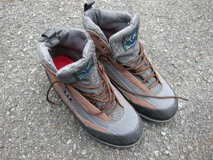

私のお気に入り
釣り道具 ウェーディングシューズ キャラバン 飯豊アクア
現在、ニュージーランドでは、河川の生態系に悪影響を与える水藻「ディディーモ」の拡散を防ぐため、フェルトソールのウェーディングシューズの持ち込み・使用が禁止されている。2010年のNZ釣行に向けて、新しいウェーディングシューズを探していたところ、インターネット上で評判の良かった「アクアステルス」というソールを使用したモデルが、登山靴の老舗、キャラバンから出ていることを知った。さっそく近くの登山用品店でサイズを２種類取り寄せてもらった上、店内でウェーダーを着込み、試し履きをしてから購入した。サイズは27.0cmでちょうど良かった。

NZ釣行前に一度、試しに渓流を釣り歩いてみての感想は、以下の通りである。
・濡れていても表面の汚れていない石・岩ではグリップ絶大。乾燥した岩ではまったく滑らないので、ついつい無理な体勢を取りたくなってしまうほどである。このグリップ感を味わうと、もうフェルト底には戻れない気がする。
・少しでもヌルの付いた石・岩ではグリップが皆無。よく滑る。きれいな石に混じって一つだけヌルの付いた石があり、その上に無意識に乗ると間違いなく転倒すると思う。食い付くか滑るか、０か１かのデジタル的な感覚である。キャラバンのウェブサイトには、以下のような注意書きがあった。
「アクアステルスソールはアメリカのクライミングシューズ・トップブランドファイブテン（アナサジ社）が開発した特殊ラバーソールです。フリクション性能が高く、アプローチシューズとしても使用でき、汎用性に優れています。ただし、ヌメリがあったり苔むした岩には適しません。ご使用にあたっては状況を見極める判断が必要です。」
・重量は、これまで履いていたダイワのフェルト底の靴と比べると少し重め。ただ、フェルトに水を吸い込むことがないので、使用時の重量増加は少ないと思われる。
・林道など、アプローチのための長時間の歩行については未知数。付属していたタグには、「アプローチや登山道ではトレッキングシューズ等をご使用下さい」との注意書きがあった。
・カラーリングなど、靴としての外見上のデザインは今一つ垢抜けない。
・靴紐を通す所が布製のループであり、穴にハトメという設計では無いのでこのへんの耐久性が問題か？また、上部まですべてループに靴紐を通すようになっているので、履く時に手間がかかる。前の靴では上部三つくらいはフックになっていたので手早く履けた。
話はちょっと飛ぶが、Saint Publishing社出版の、New Zealand Fly Fishing という2009年版のカレンダーの中で、一般的なウェーディングシューズには土踏まずを支えるアーチサポートが少ないか、皆無のものもあるため、アーチサポートのしっかりした中敷きを入れるとずいぶん川歩きが楽になるという記事を読んだ。そこで名古屋駅の東急ハンズで、IMPLUS 社製の男性用パフォーマンス・インソール、「Arch（アーチ）」という中敷き（サイズL）を買って来て敷き込んだ。クッションが良くなり、土踏まずを高くサポートしてくれるので、ノーマルよりはだいぶん改善されたと思う。
2010年11月現在、キャラバンの「渓流」シリーズでは、すでに新しいモデルが出ており、「黒部アクア」「大峰アクア」というモデルがラインナップされている。黒部アクアでは、靴紐を通す部分がしっかりした穴に改良されているようだ。
実際にニュージーランド南島西海岸の川を歩いてみた感想は、またアップしたいと思います。
私のお気に入り 目次へ
サイトマップ
ホームへ
お問い合わせ